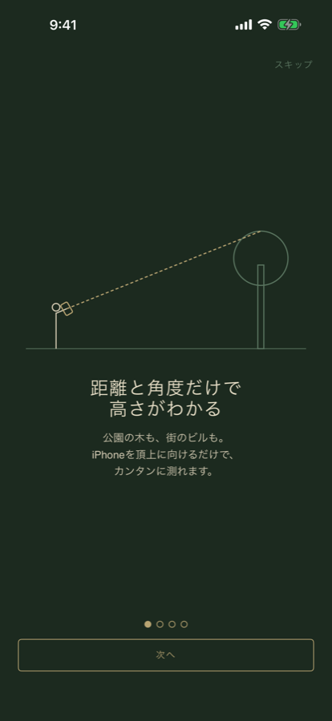
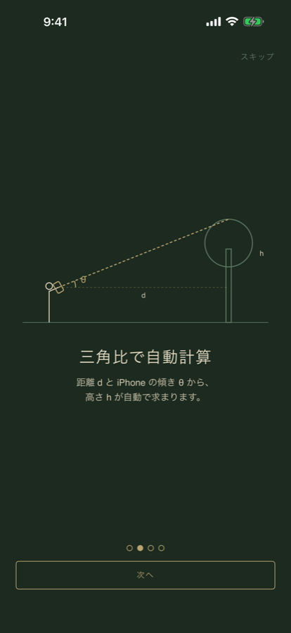
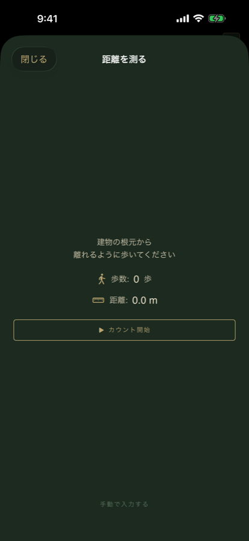

タカサ / TAKASA
歩いて測る、
建物の高さ
街で見上げたビルも、公園の木も。iPhoneのカメラと自分の歩数だけで、その場で高さがわかります。
App Store で近日公開使い方は2ステップ
- 建物から離れる方向に歩く 歩数を自動でカウントし、歩幅をかけて距離を割り出します。手入力にも対応。
- カメラを頂上に向けて照準を合わせる iPhoneの傾きから仰角を読み取り、三角比で高さを計算して表示します。
LiDARでは測れない高さを測る
iPhone純正の「計測」アプリはLiDARを使うため、届く距離はおよそ5メートルまで。ビルやマンションの高さには使えません。
タカサは距離と角度から計算する方式なので、数十メートルの建物にも対応します。特別なセンサーは要りません。
画面



特徴
- 歩数カウントで距離を自動計測（手入力にも対応）
- 身長から目線の高さを自動推定
- メートル / フィート切り替え
- 日本語・英語・中国語・韓国語・スペイン語・フランス語に対応
- アカウント登録不要。測定データを外部に送信しません
精度について
表示される高さはおおよその目安です。地面の傾斜、歩幅の個人差、iPhoneを構える高さの推定誤差により、実際の高さとは差が出ます。測量用途にはご利用いただけません。